El Diseño de Experimentos (DoE) es una metodología estadística avanzada que se utiliza para planificar, conducir, analizar y interpretar experimentos de manera eficiente y efectiva. Esta técnica es fundamental en investigación y desarrollo, pues permite determinar con precisión las causas de variación en un conjunto de datos, optimizando así los recursos y maximizando la extracción de información útil.
El DoE fue desarrollado inicialmente por Sir Ronald A. Fisher en la década de 1920, en sus trabajos en la estación experimental de Rothamsted en Inglaterra. Fisher introdujo conceptos revolucionarios como la aleatorización, la replicación y el bloqueo, que son piedras angulares en el diseño de experimentos moderno. Desde sus orígenes en la agricultura, el DoE ha evolucionado y se ha expandido a numerosas otras áreas incluyendo la ingeniería, la farmacología, el marketing y la ciencia de datos, entre otros.
El principal objetivo del DoE es identificar y cuantificar la relación entre los factores controlables de un experimento (variables independientes) y las respuestas observadas (variables dependientes). A continuación, se detallan los componentes principales:
También conocidas como factores, son las condiciones o inputs del experimento que el investigador establece o modifica para observar su efecto sobre las respuestas. Por ejemplo, la temperatura o la presión en un proceso químico.
Son los resultados o outputs del experimento, que se miden para cada combinación de factores. Por ejemplo, el rendimiento de un proceso o la resistencia de un material.
Cada variable independiente puede ser ajustada a diferentes estados o niveles. El experimento puede explorar varios niveles de un factor para determinar cuál es óptimo.
Para garantizar la fiabilidad de los resultados, cada combinación de niveles de factores se repite varias veces. Esto ayuda a estimar el error experimental y proporciona una medida de la variabilidad.
El análisis de un diseño de experimentos típicamente implica la comparación de medias entre grupos utilizando el análisis de varianza (ANOVA). La siguiente es una representación simplificada de la ecuación de ANOVA:
\[SS_{Total} = SS_{Entre} + SS_{Error}\]
Donde:
Este es el diseño más simple y se utiliza cuando se trata de un único factor con varios niveles. Cada unidad experimental se asigna a un tratamiento de forma aleatoria.
Permite la investigación de dos o más factores simultáneamente. Es extremadamente eficiente, ya que evalúa no solo los efectos principales sino también las interacciones entre los factores.
Utilizado cuando el experimento involucra una variable de bloqueo que puede afectar la respuesta del tratamiento. Los tratamientos se aleatorizan dentro de cada bloque para controlar la variabilidad asociada a la variable de bloqueo.
Una empresa fabricante de insecticidas para controlar las moscas requiere realizar un estudio para medir la efectividad de tres de sus variedades. Para realizar el estudio cada uno de los productos se aplica a grupos de 100 moscas. Pasado un tiempo se cuentan el número de moscas muertas expresado en porcentaje. En cada caso se realizaron 6 replicas del experimento en dias diferentes. El estudio desea determinar si existen diferencias en los resultados obtenidos por los tres insecticidas.
| tipo | dia 1 | dia 2 | dia3 | dia 4 | dia 5 | dia6 |
|---|---|---|---|---|---|---|
| A | 72 | 68 | 77 | 75 | 62 | 73 |
| B | 55 | 59 | 68 | 70 | 53 | 50 |
| C | 64 | 64 | 61 | 58 | 51 | 69 |
dataf= data.frame(
dia = as.factor(rep(c(1,2,3,4,5,6),times=3 )),
tipo =as.factor(rep(c("A", "B", "C"), times =c(6,6,6))),
moscas= c(72,68,77,75,62,73,
55,59,68,70,53,50,
64,64,61,58,51,69))
modelo=aov(moscas~ dia + tipo,data=dataf)
summary(modelo) Df Sum Sq Mean Sq F value Pr(>F)
dia 5 331.2 66.23 1.940 0.1742
tipo 2 496.0 248.00 7.266 0.0113 *
Residuals 10 341.3 34.13
---
Signif. codes: 0 '***' 0.001 '**' 0.01 '*' 0.05 '.' 0.1 ' ' 1modelo2 = lm(moscas~ tipo,data=dataf)
summary(modelo2)
Call:
lm(formula = moscas ~ tipo, data = dataf)
Residuals:
Min 1Q Median 3Q Max
-10.1667 -3.9167 0.3333 3.5833 10.8333
Coefficients:
Estimate Std. Error t value Pr(>|t|)
(Intercept) 71.167 2.734 26.035 6.71e-14 ***
tipoB -12.000 3.866 -3.104 0.00726 **
tipoC -10.000 3.866 -2.587 0.02063 *
---
Signif. codes: 0 '***' 0.001 '**' 0.01 '*' 0.05 '.' 0.1 ' ' 1
Residual standard error: 6.696 on 15 degrees of freedom
Multiple R-squared: 0.4245, Adjusted R-squared: 0.3477
F-statistic: 5.532 on 2 and 15 DF, p-value: 0.01587boxplot(moscas~ tipo,data=dataf,main="Comparacion de Tratamientos, según tipo de insecticida")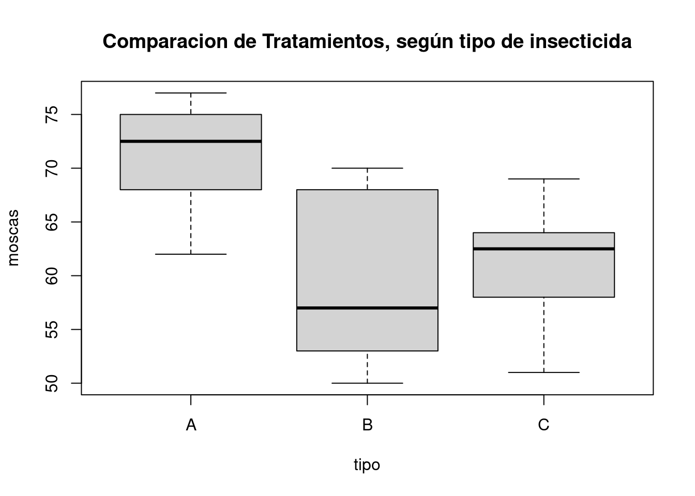
boxplot(moscas ~ dia, data=dataf, main="Comparacion de Tratamientos según día de aplicación")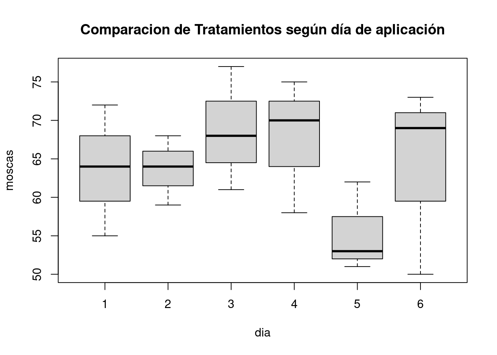
tk=TukeyHSD(modelo)
tk$tipo diff lwr upr p adj
B-A -12 -21.246652 -2.7533479 0.01313772
C-A -10 -19.246652 -0.7533479 0.03466281
C-B 2 -7.246652 11.2466521 0.82695514qqnorm(modelo$residual,main="Prueba de Normalidad")
qqline(modelo$residual)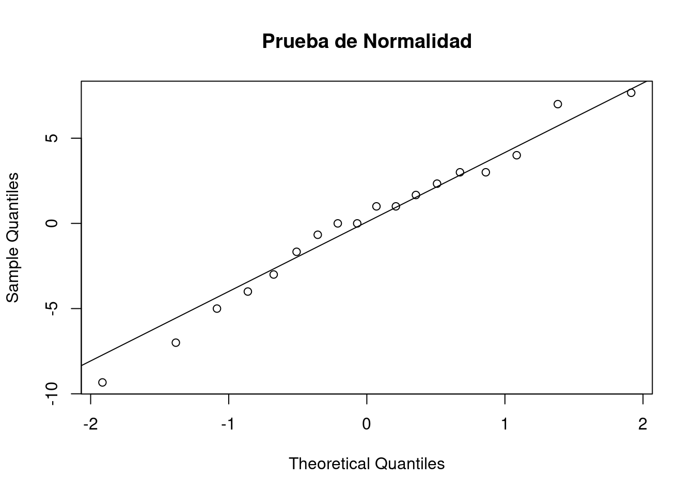
shapiro.test(modelo$residuals)
Shapiro-Wilk normality test
data: modelo$residuals
W = 0.97785, p-value = 0.9252interaction.plot(dataf$dia,dataf$tipo,dataf$moscas, main="Interacciones")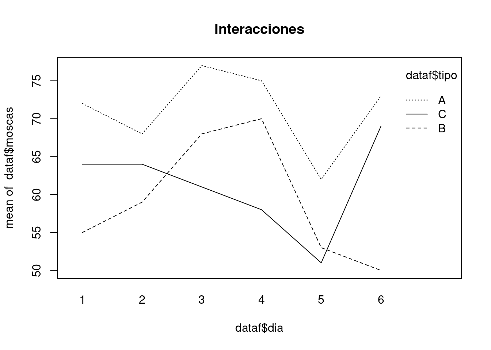
Un equipo de agrónomos está llevando a cabo un estudio para evaluar la eficacia de tres genotipos diferentes de una planta específica en términos de su rendimiento agrícola. El objetivo es determinar cuál de estos genotipos ofrece el mejor rendimiento bajo condiciones controladas, lo cual es crucial para futuras aplicaciones en programas de mejora genética.
Los genotipos, etiquetados como g1, g2, y g3, han sido plantados en un campo experimental. Para garantizar la fiabilidad de los resultados y minimizar el efecto de variabilidad ambiental, cada genotipo ha sido replicado cuatro veces, resultando en un total de 12 unidades experimentales. El rendimiento de las plantas, medido en alguna métrica específica como puede ser toneladas por hectárea, se ha registrado para cada unidad experimental.
set.seed(123)
datos = data.frame(
gen = gl(3,4,12, c('g1','g2','g3')),
rep = gl(4,1,12, c('r1','r2','r3','r4')),
rto = c(3.5, 3.8, 3.6, 3.5,
3.6, 3.9, 4.1, 3.8,
4.2, 4.9, 4.5, 4.3)
)
### TABLA ANÁLISIS DE VARIANZA
boxplot(rto ~ gen, data = datos, las=1)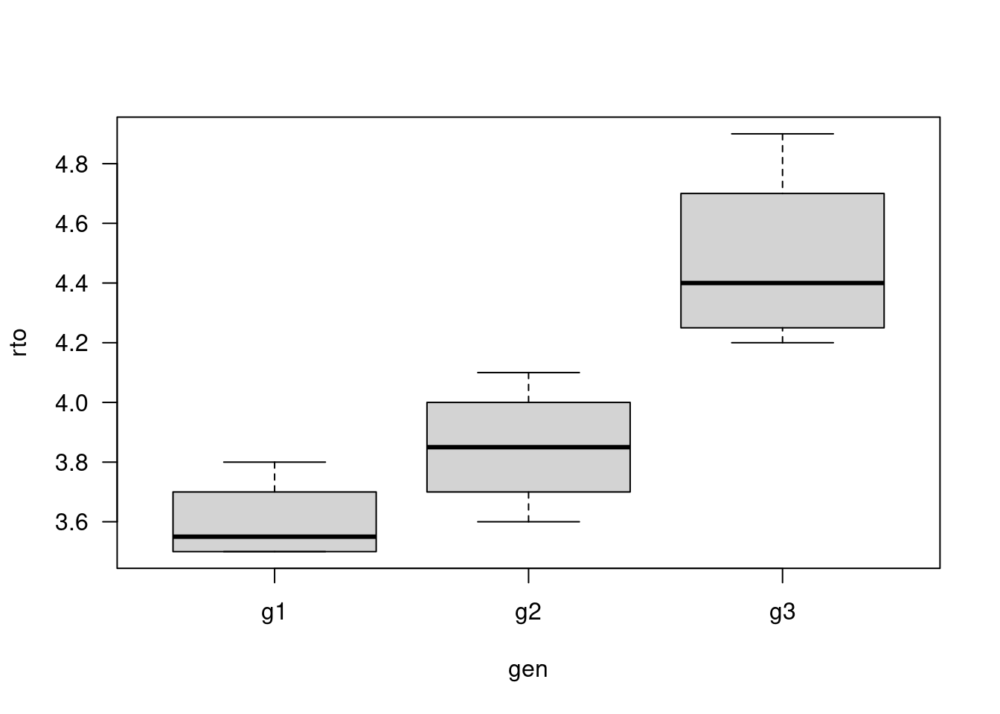
boxplot(rto ~ rep, data = datos, las =1)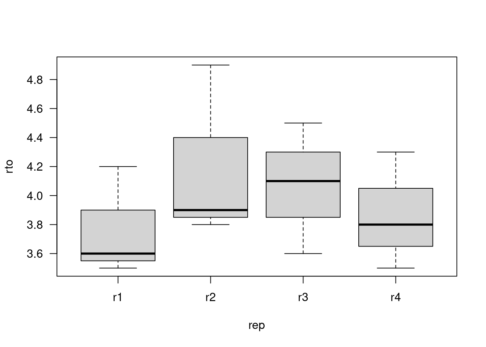
modelo3 = lm(rto ~ gen, datos)
summary(modelo3)
Call:
lm(formula = rto ~ gen, data = datos)
Residuals:
Min 1Q Median 3Q Max
-0.2750 -0.1187 -0.0250 0.0875 0.4250
Coefficients:
Estimate Std. Error t value Pr(>|t|)
(Intercept) 3.6000 0.1152 31.258 1.72e-10 ***
geng2 0.2500 0.1629 1.535 0.159172
geng3 0.8750 0.1629 5.372 0.000449 ***
---
Signif. codes: 0 '***' 0.001 '**' 0.01 '*' 0.05 '.' 0.1 ' ' 1
Residual standard error: 0.2303 on 9 degrees of freedom
Multiple R-squared: 0.7729, Adjusted R-squared: 0.7224
F-statistic: 15.31 on 2 and 9 DF, p-value: 0.001268### TABLA ANÁLISIS DE VARIANZA
modelo3 = aov(rto ~ gen, datos)
summary(modelo3) Df Sum Sq Mean Sq F value Pr(>F)
gen 2 1.6250 0.8125 15.31 0.00127 **
Residuals 9 0.4775 0.0531
---
Signif. codes: 0 '***' 0.001 '**' 0.01 '*' 0.05 '.' 0.1 ' ' 1# Realizar la prueba de Tukey HSD
tukey_test <- TukeyHSD(modelo3, "gen")
print(tukey_test) Tukey multiple comparisons of means
95% family-wise confidence level
Fit: aov(formula = rto ~ gen, data = datos)
$gen
diff lwr upr p adj
g2-g1 0.250 -0.2047437 0.7047437 0.3209144
g3-g1 0.875 0.4202563 1.3297437 0.0011682
g3-g2 0.625 0.1702563 1.0797437 0.0100131# Gráfico de los resultados de la prueba de Tukey
plot(tukey_test, las=1)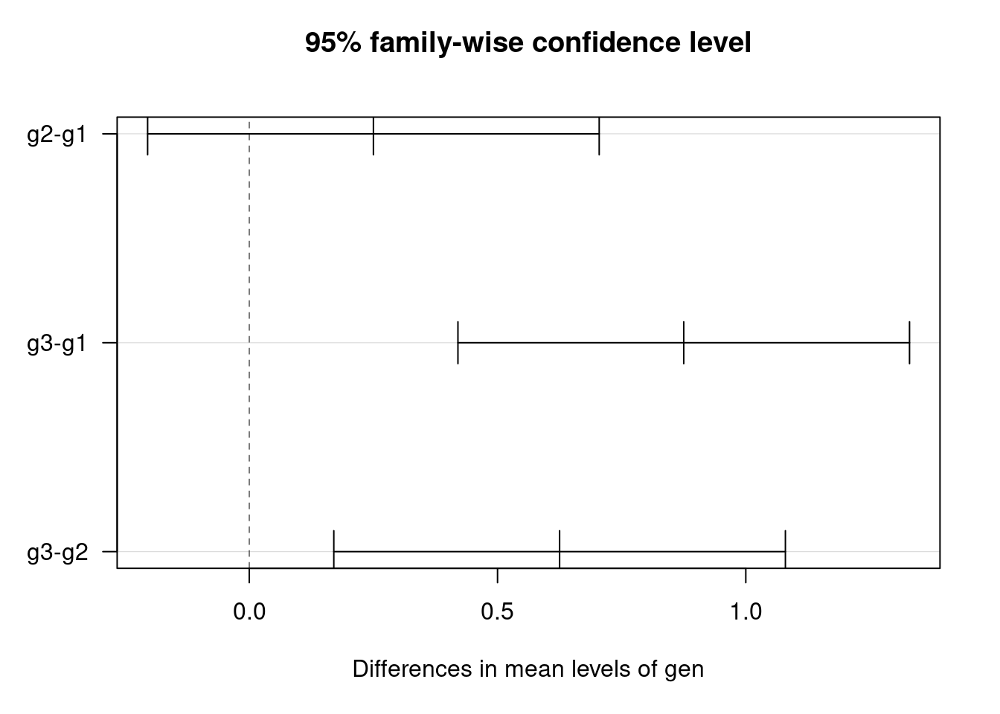
# library(readr)
# Duracion <- read_table("data/duracion.csv")
Duracion <- data.frame( Material =c("Material1", "Material1", "Material1", "Material2", "Material2", "Material2",
"Material3", "Material3", "Material3", "Material1", "Material1", "Material1",
"Material2", "Material2", "Material2", "Material3", "Material3", "Material3",
"Material1", "Material1", "Material1", "Material2", "Material2", "Material2",
"Material3", "Material3", "Material3", "Material1", "Material1", "Material1",
"Material2", "Material2", "Material2", "Material3", "Material3", "Material3"),
Temperatura =c(15, 80, 125, 15, 80, 125, 15, 80, 125, 15, 80, 125, 15, 80, 125,
15, 80, 125, 15, 80, 125, 15, 80, 125, 15, 80, 125, 15, 80, 125,
15, 80, 125, 15, 80, 125),
Duracion = c(155, 34, 20, 150, 126, 25, 138, 174, 96, 130, 40, 70, 188, 122, 58, 168,
150, 82, 74, 80, 82, 159, 106, 70, 110, 120, 104, 180, 75, 58, 126, 115,
45, 160, 139, 60))
names(Duracion)[1] "Material" "Temperatura" "Duracion" str(Duracion)'data.frame': 36 obs. of 3 variables:
$ Material : chr "Material1" "Material1" "Material1" "Material2" ...
$ Temperatura: num 15 80 125 15 80 125 15 80 125 15 ...
$ Duracion : num 155 34 20 150 126 25 138 174 96 130 ...# Cambio de variables
FactorA_Material <- factor(Duracion$Material)
FactorB_Temperatura <- factor(Duracion$Temperatura)
Respuesta_Duracion <- Duracion$Duracion
# Cálculo de la tabla ANOVA
Modelo <- lm(Respuesta_Duracion ~ (FactorA_Material + FactorB_Temperatura)^2)
ANOVA <- aov(Modelo)
summary(ANOVA) Df Sum Sq Mean Sq F value Pr(>F)
FactorA_Material 2 10633 5317 7.983 0.00189 **
FactorB_Temperatura 2 39083 19542 29.344 1.69e-07 ***
FactorA_Material:FactorB_Temperatura 4 9438 2359 3.543 0.01897 *
Residuals 27 17981 666
---
Signif. codes: 0 '***' 0.001 '**' 0.01 '*' 0.05 '.' 0.1 ' ' 1# Coeficientes de la ecuación de regresión
as.data.frame(coef(ANOVA)) coef(ANOVA)
(Intercept) 134.75
FactorA_MaterialMaterial2 21.00
FactorA_MaterialMaterial3 9.25
FactorB_Temperatura80 -77.50
FactorB_Temperatura125 -77.25
FactorA_MaterialMaterial2:FactorB_Temperatura80 39.00
FactorA_MaterialMaterial3:FactorB_Temperatura80 79.25
FactorA_MaterialMaterial2:FactorB_Temperatura125 -29.00
FactorA_MaterialMaterial3:FactorB_Temperatura125 18.75# Graficas de los efectos principales
Efectos <- data.frame(FactorA_Material, FactorB_Temperatura, Respuesta_Duracion)
plot.design(Efectos, fun="mean", main=" Gráfica de efectos principales", ylab= "Duración", xlab="Factor")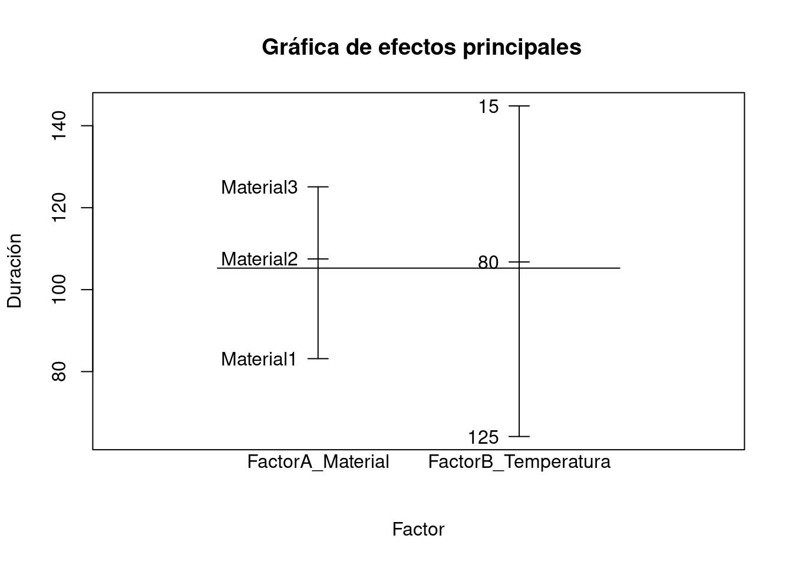
# Gráfica de interacción
interaction.plot(FactorA_Material, FactorB_Temperatura, Respuesta_Duracion,
main="Interacción Material-Temperatura", xlab="Material", ylab="Temperatura", col=c(1:3))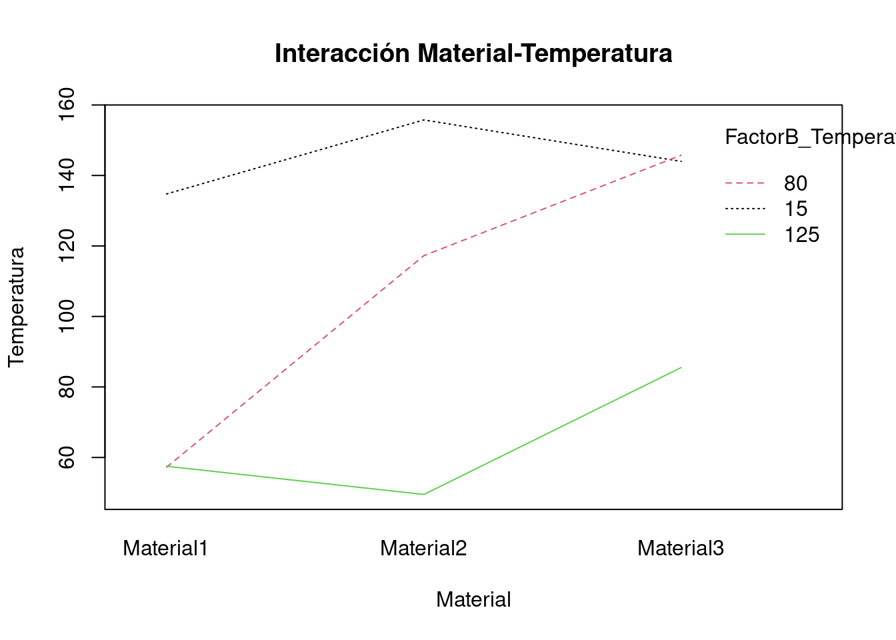
# Análisis de los residuos estándar del modelo
plot(rstandard(Modelo),
main="Gráfica de residuos estándar",
xlab="Observación", ylab="Residuos estandarizados")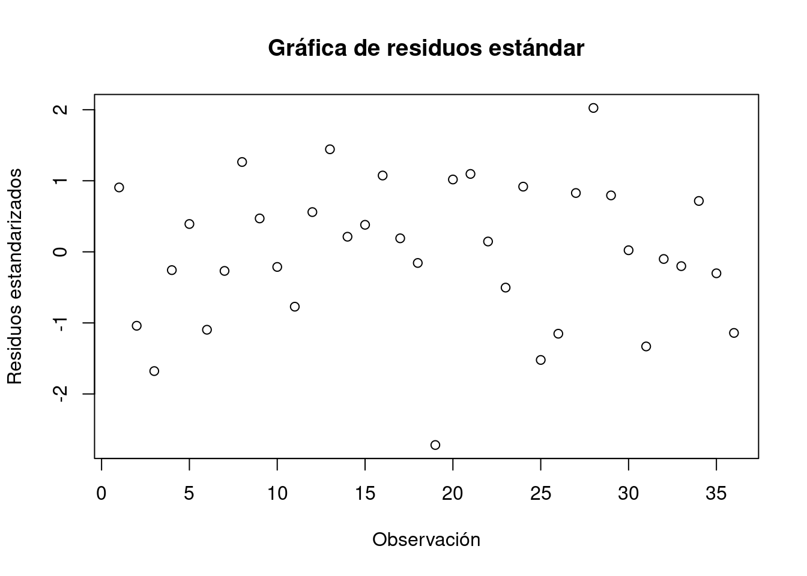
## No se observan problemas con los datos
qqnorm(rstandard(Modelo))
qqline(rstandard(Modelo), col="red")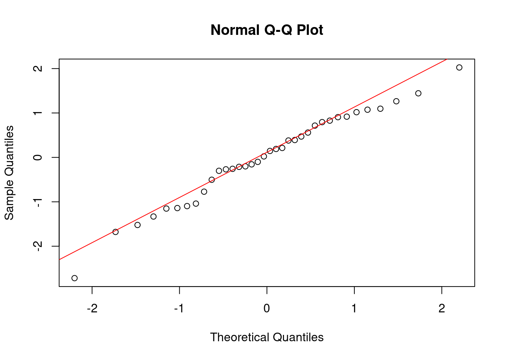
shapiro.test(rstandard(Modelo))
Shapiro-Wilk normality test
data: rstandard(Modelo)
W = 0.9777, p-value = 0.6672# Los residuos se comportan de forma normal, no se observan problemas con los datos
# Para ver los valores ajustados por la regresión:
fitted(Modelo) 1 2 3 4 5 6 7 8 9 10 11
134.75 57.25 57.50 155.75 117.25 49.50 144.00 145.75 85.50 134.75 57.25
12 13 14 15 16 17 18 19 20 21 22
57.50 155.75 117.25 49.50 144.00 145.75 85.50 134.75 57.25 57.50 155.75
23 24 25 26 27 28 29 30 31 32 33
117.25 49.50 144.00 145.75 85.50 134.75 57.25 57.50 155.75 117.25 49.50
34 35 36
144.00 145.75 85.50 # Graficando los valores tanto los ajustados como los reales
plot(fitted(Modelo),
Respuesta_Duracion, col=c("red", "blue"), pch=19,
main="Gráfica de valores ajustados y reales",
ylab="Valores reales", xlab="Valores ajustados")
legend(50, 190, col=c("red","blue"), legend=c("Ajustado", "Real"), pch=19)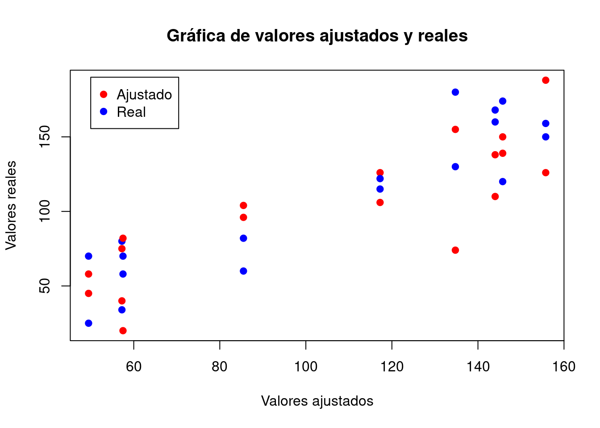
# Para hacer predicciones
# Se hace la predicción con los valores que salen del análisis
FactorA_Material2 <- factor(c("Material1", "Material2" ,"Material3"))
FactorB_Temperatura2 <- factor(c(15,15,15))
predict(lm(Respuesta_Duracion ~ (FactorA_Material + FactorB_Temperatura)^2),
data.frame(FactorA_Material= FactorA_Material2, FactorB_Temperatura= FactorB_Temperatura2),
level=0.95, interval="confidence") fit lwr upr
1 134.75 108.2751 161.2249
2 155.75 129.2751 182.2249
3 144.00 117.5251 170.4749## La predicción para Material 2 con Temperatura de 15 es de 155.75 de duración
# Para probar el material más homogéneo
# Se aprecia que el material 3 es el más homogéneo
FactorA_Material2 <- factor(c("Material3", "Material3" ,"Material3"))
FactorB_Temperatura2 <- factor(c(15,80, 125))
predict(lm(Respuesta_Duracion ~ (FactorA_Material + FactorB_Temperatura)^2),
data.frame(FactorA_Material= FactorA_Material2, FactorB_Temperatura= FactorB_Temperatura2),
level=0.95, interval="confidence") fit lwr upr
1 144.00 117.52515 170.4749
2 145.75 119.27515 172.2249
3 85.50 59.02515 111.9749##### https://rpubs.com/ctellez_gdl/65342